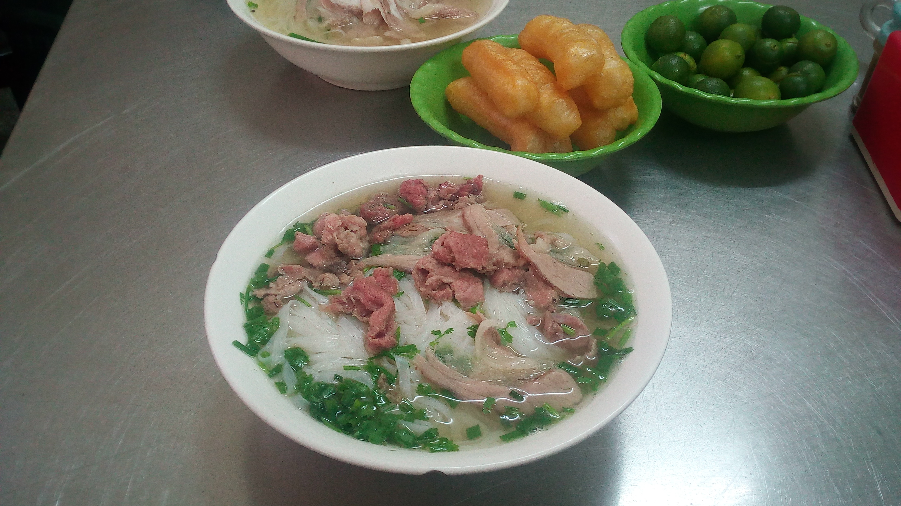
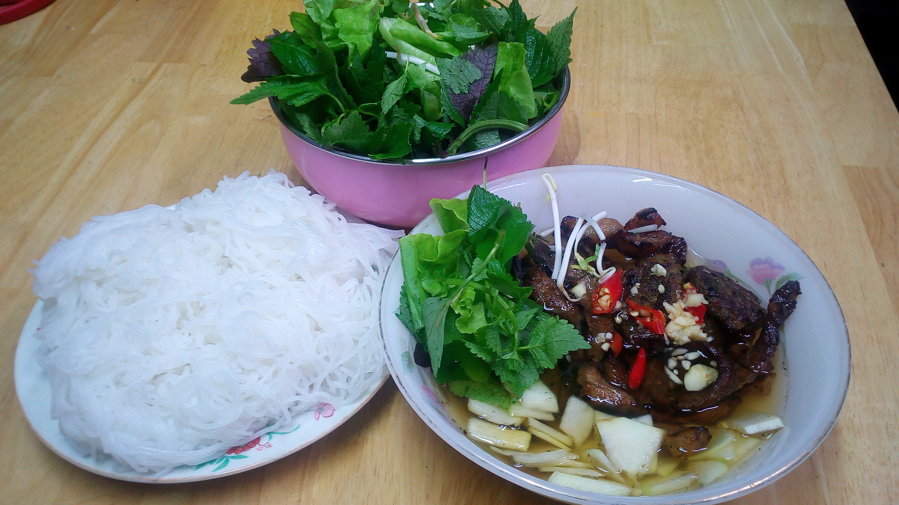
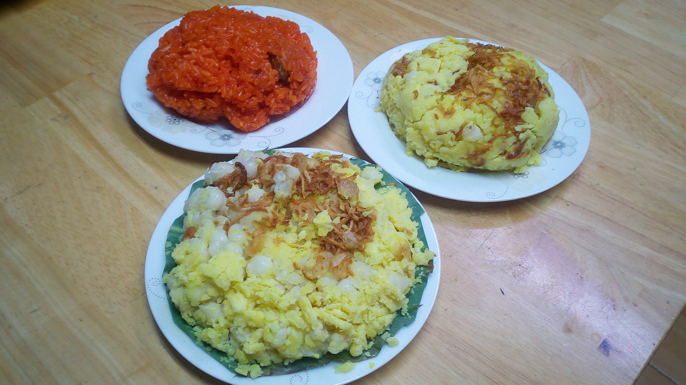
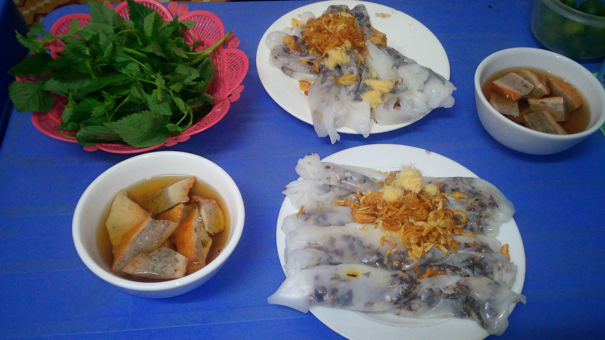
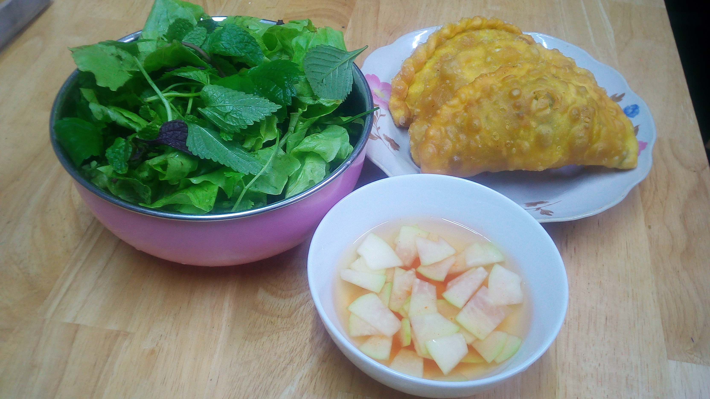
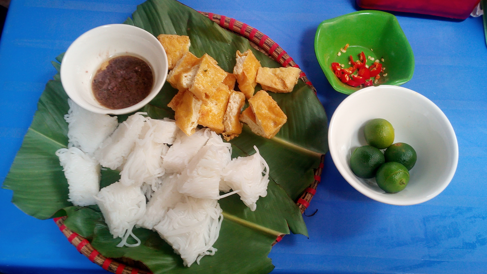

Exploring Hanoi
Pho (Phở)

Photo by Binh Giang on Wikipedia
Bun Cha (Bún Chả)

Xoi (Xôi)

Bun Thang (Bún Thang)
Photo by Nguyễn Thanh Quang on Wikipedia
Banh Cuon (Bánh Cuốn)

Banh Goi (Bánh Gối)

Bun Dau Mam Tom (Bún Đậu Mắm Tôm)

Coffee (Cà Phê)
Photo by Demi DeHerrera on Unsplash